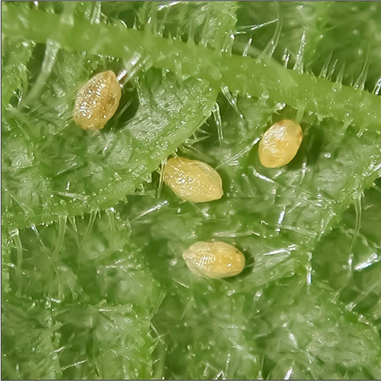
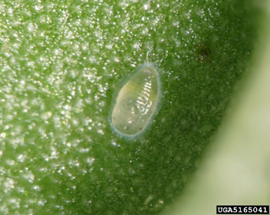
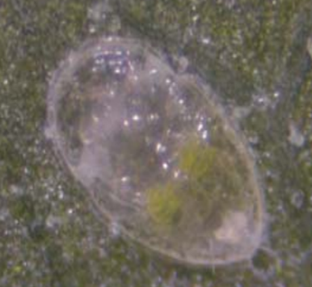
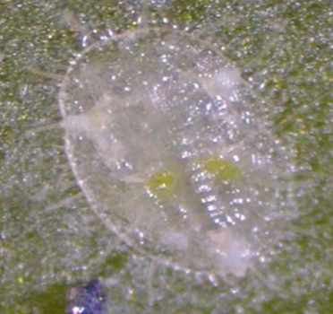
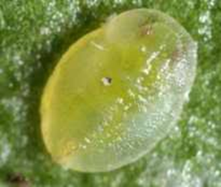
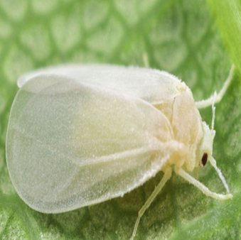
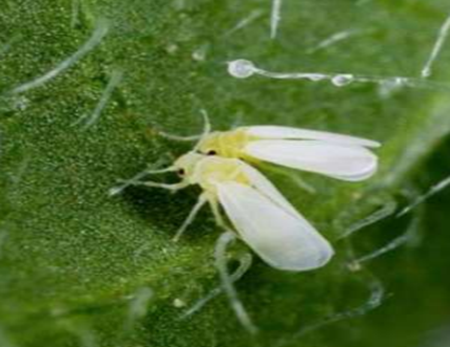
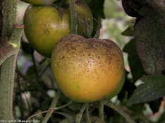
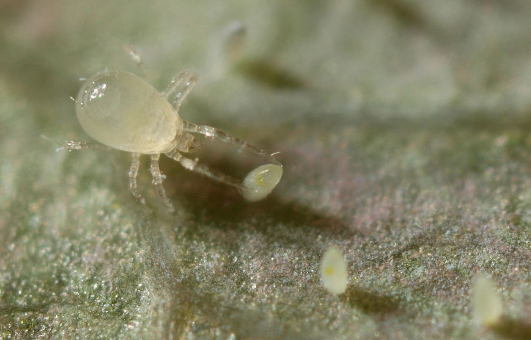

PLAGAS
| Bemisia tabaci (Gennadius) (Hemiptera: Aleyrodidae) | ||||
|---|---|---|---|---|
 |
Descripción: | |||
|
La mosca blanca (Bemisia tabaci Gennadius) es una plaga común en muchos cultivos, incluido el tomate. Generalmente, la mosca blanca puede aparecer en diversas etapas fenológicas del cultivo de tomate, desde la siembra hasta la cosecha. |
||||
| Presentes en: |
|
|||
| Ninfa | |||||
|---|---|---|---|---|---|
| Huevo/ Partenogenesis | Primer instar | Segundo instar | Tercer instar | Cuarto instar | Adulto |
|  |  |  |  |  |  |
| Tiempo: 5 - 9 días | Tiempo: 13 - 23 días | Tiempo: 9 - 23 días | |||
| Descripción | Descripción | Descripción | |||
| Cada hembra pone hasta 160 huevos. El huevo tiene una superficie lisa y es de forma ovalada, con una parte superior puntiaguda y una parte inferior redondeada. Al principio, su color es blanco verdoso, pero con el tiempo cambia a amarillo y luego a marrón claro justo antes de eclosionar. Tiene unas dimensiones de 0.23 mm de largo y 0.1 mm de ancho. | Tiene forma ovalada, con la parte distal ligeramente más angosta. Es translúcida y presentar algunas manchas amarillas. Es de tamaño muy reducido, con unas dimensiones de 0.27 mm de largo y 0.15 mm de ancho. Su período de duración promedio es de alrededor de 3 días | Es translúcida, de forma oval con bordes ondulados. Mide 0.38 mm de longitud y 0.23 mm de anchura. La duración promedio es de tres días | Tiene una forma ovalada, es plana y transparente, similar a la del segundo estado de desarrollo. Su tamaño es el doble del primer estado, midiendo 0.54 mm de largo y 0.33 mm de ancho. Es fácil de observar en el reverso de la hoja. Por lo general, la duración promedio de esta etapa es de 3 días. | El cuarto estadio, recién formada, es ovalada, plana y casi transparente. A medida que avanza su desarrollo, se vuelve opaca y se le llama pupa. La pupa presenta hilos de cera largos y erectos característicos y, vista de perfil, parece estar elevada sobre la superficie de la hoja. En las pupas más desarrolladas, los ojos son visibles. La pupa tiene dimensiones de 0.73 mm de largo y 0.45 mm de ancho, y su duración promedio es de ocho días | El cuarto estadio, recién formada, es ovalada, plana y casi transparente. A medida que avanza su desarrollo, se vuelve opaca y se le llama pupa. La pupa presenta hilos de cera largos y erectos característicos y, vista de perfil, parece estar elevada sobre la superficie de la hoja. En las pupas más desarrolladas, los ojos son visibles. La pupa tiene dimensiones de 0.73 mm de largo y 0.45 mm de ancho, y su duración promedio es de ocho días |
| Crecimiento de hojas y tallos y meduración de frutos | |
|---|---|
| DAÑO DIRECTO | |
| SINTOMA | SIGNO |
|  |  |
| Descripción: | Descripción: |
| Se desplaza hacia un lugar adecuado para alimentarse en el envés de la hoja, típicamente en hojas maduras. Una vez allí, se adhiere a la superficie y permanece inmóvil durante las etapas ninfales siguientes. Con el transcurso del tiempo, tanto los adultos como las ninfas de mosca blanca se alimentan de la savia de las plantas y excretan melaza en hojas, tallos y frutos . | Amarillamiento de las hojas debido a la extracción de nutrientes.Desarrollo de hongos como Fumagina y transmisión de virus fitopatógenos |
Para un control eficaz de la plaga se recomiendo integrar los siguientes controles:
a.Control quimicob.Control biológico
c.Control cultural
| Producto | Descripción |
|---|---|
| Abamectin 18 EC |
|
| Producto | Descripción |
| MAGISTER 200 SC |
|
| Este control permite reducir las poblaciones de la plaga y el uso de plaguicidas. | |
|---|---|
|
Amblydromalus limonicus GARMAN, (acaro depredador.) (Fitoseiidae, Mesostigmatas)  |
|
El cultivo debe ser inspeccionado periódicamente desde las primeras etapas, eliminando aquellas plantas que presenten síntomas en sus hojas como tonos de color verde claro a café claro, las cuales deben enterrarse.